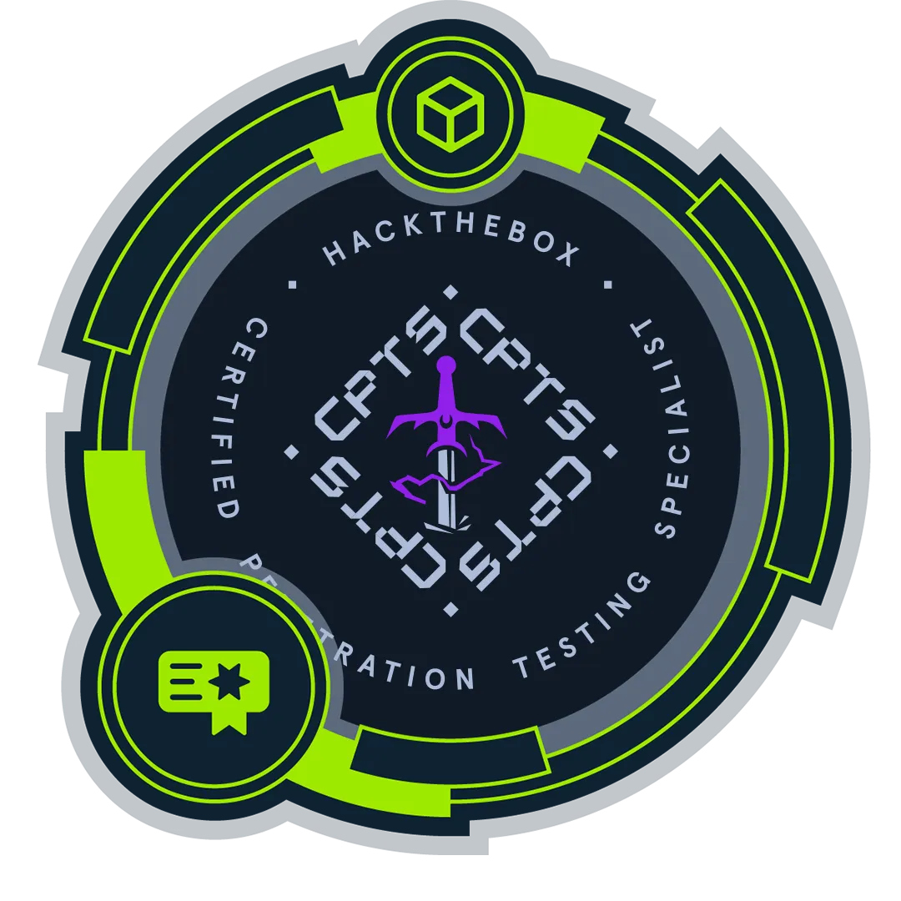

Web Application
Prüfung moderner Webanwendungen mit Fokus auf reale technische Risiken, Authentifizierung, Autorisierung und Geschäftslogik.
SkullHarbor hilft kleinen Unternehmen, ihre IT-Sicherheit zu prüfen, konkrete Schwachstellen im Alltag zu verbessern und – wenn nötig – Systeme professionell pentesten zu lassen.
Sie müssen nicht wissen, welches Security-Produkt Sie brauchen. Starten Sie mit dem Selbstcheck – oder wählen Sie direkt einen professionellen Pentest, wenn Sie eine technische Prüfung benötigen.
Geführter Security Check mit Prioritäten, Maßnahmenplan und Praxis-Tools.
CYBERBASIS ENTDECKEN →Autorisierte Tests für Webanwendungen, APIs und Infrastruktur.
PENTESTING ANSEHEN →Ein geführter IT-Sicherheitscheck für kleine Unternehmen ohne eigene Security-Abteilung. Sie beantworten verständliche Fragen, erhalten klare Prioritäten und setzen offene Punkte mit passenden Praxis-Tools um.
CyberBasis hilft Ihnen, grundlegende organisatorische und technische Sicherheitsmaßnahmen strukturiert zu prüfen und zu verbessern.
Es führt keine aktiven Angriffssimulationen gegen Ihre Systeme durch. Wenn Sie wissen möchten, welche technischen Schwachstellen in einer Webanwendung, API oder Infrastruktur tatsächlich vorhanden sind, beginnt die nächste Ebene.
WEITER ZUM PENETRATION TESTING →Autorisierte Penetrationstests mit klarem Scope, nachvollziehbaren Findings und umsetzbaren Empfehlungen.
Prüfung moderner Webanwendungen mit Fokus auf reale technische Risiken, Authentifizierung, Autorisierung und Geschäftslogik.
Prüfung von API-Endpunkten auf Authentifizierungs-, Autorisierungs-, Daten- und Logikfehler innerhalb des vereinbarten Scopes.
Prüfung autorisierter Hosts und exponierter Dienste auf Fehlkonfigurationen, Schwachstellen und relevante Angriffspfade.
Gezielte Nachprüfung behobener Findings und nachvollziehbarer Abschlussstatus.
SkullHarbor verbindet mehr als zehn Jahre Softwareentwicklung mit praxisorientierter offensiver und defensiver Security. Das Ziel: Sicherheitsprobleme nicht nur benennen, sondern so erklären, dass Unternehmen daraus konkrete Entscheidungen und Maßnahmen ableiten können.
Absolute Sicherheit ist eine Illusion. Echte Sicherheit beginnt damit, Risiken zu verstehen, Schwachstellen zu erkennen und bewusst zu handeln.

Praxisorientierte offensive Security und Penetration Testing.

Defensive Security, Incident Analysis und Security Operations.
Langjährige Erfahrung mit Webanwendungen, APIs und realen Softwareprojekten.
Für kleine Unternehmen, Selbstständige und kleine Teams, die grundlegende IT-Sicherheitsmaßnahmen strukturiert prüfen und verbessern möchten, ohne dafür eine eigene Security-Abteilung zu benötigen.
Nein. CyberBasis ist ein geführter Selbstcheck mit Maßnahmenplan und Praxis-Tools. Es ist kein Penetrationstest, kein Audit, keine Rechtsberatung und kein Nachweis für DSGVO-, NIS2- oder ISO-27001-Konformität.
Wenn Sie zusätzlich zur organisatorischen und technischen Basis wissen möchten, welche Schwachstellen in autorisierten Webanwendungen, APIs oder Infrastruktur tatsächlich technisch nachweisbar sind.
SkullHarbor verbindet mehr als zehn Jahre Softwareentwicklung mit den Security-Zertifizierungen CPTS und CDSA sowie praktischer Ausrichtung auf offensive und defensive Security.
Nein. Penetrationstests erfolgen ausschließlich innerhalb eines eindeutig autorisierten und vereinbarten Scopes.